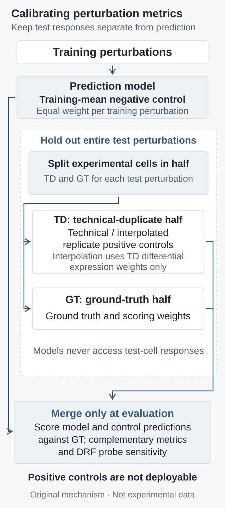

Why virtual-cell evaluation needs metric calibration first
Deriving why shared shifts and sampling noise make mean baselines competitive, then separating technical duplicates, metric sensitivity, and test isolation in a protocol that combines error, specific effects, and retrieval.
A model that ignores perturbation identity and always returns the training mean can achieve a high correlation. Conversely, a repeated measurement containing real perturbation signal can lose to that mean. These observations are compatible: one score may reward a shared shift, while another rewards a low-variance estimator. The useful question raised by the metric-calibration study published on October 1, 2026 is whether the measuring instrument can distinguish informative predictions from predictions without perturbation-specific information before we compare models. Original simplified derivations below explain the mechanisms and lead to an implementable evaluation protocol.
1. Define the target before choosing the baseline
We consider genetic perturbations unseen during training within a fixed cellular context. The evaluation target is the average expression vector of cells receiving the same perturbation: pseudobulk. Let \(X\) be a \(G\)-dimensional expression vector after prespecified normalization and transformation, \(I\) the perturbation identity, and \(C=c\) the fixed context. The training perturbation set \(\mathcal T\) contains \(M\) perturbations:
\(\bar x_j\) averages cells within a perturbation. The reference \(b\) weights training perturbations equally, so a perturbation with more cells does not automatically dominate it. This follows the new study. It differs from Systema's prediction baseline that averages all perturbed training cells; Systema's perturbed-centroid evaluation reference instead weights perturbations equally. Reproductions must not collapse these distinct definitions into a single “mean.”
The control-cell mean \(\mu_{\mathrm{ctrl}}\) tests “no change”; \(b\) tests “only the average change”; a linear baseline tests whether nonlinearity adds value. For unseen combinations of observed single perturbations, an additive prediction is also necessary:
The linear benchmark published on August 4, 2025 demonstrates that such baselines are competitive. Accurate means, however, do not imply accurate cell-state distributions, multimodality, or responses in rare cells. Nor do we interpret differences in transformed expression directly as differences in molecule counts.
2. How a shared shift produces high correlation
Systema, published online on August 25, 2025, emphasizes shared variation arising from factors such as perturbation-panel selection and cellular state. Consider a simplified decomposition into a shared shift \(s\) and a specific effect \(u_i\). Assume the training-average specific effect is zero and, for this example, \(s,u_i\) are centered across genes, mutually orthogonal, and nonzero. A predictor returning only \(b\) gives:
When the shared shift dominates the specific effect, correlation approaches one without identifying perturbation identity. This is a special case illustrating a mechanism, not an assumption that biological effects are orthogonal. Subtracting the training reference \(b\) removes the shared term, but the mean prediction becomes a zero vector: its Pearson correlation is undefined, not silently zero. Even a prediction of \(2u_i\) has correlation one with the truth \(u_i\), despite doubling the effect magnitude. Correlation after reference subtraction still requires an error-based constraint.
3. Why a technical duplicate can lose to the mean
Condition on the fitted reference \(b\), and let the true mean differ from it by \(\delta\). We do not observe the true mean directly. A ground-truth half and a duplicate half provide the averages:
Assume independent, zero-mean noise with covariance matrices \(\Sigma_{\mathrm g},\Sigma_{\mathrm d}\), conditional on the training data. Expanding the squared error and using zero expected cross terms gives:
When \(\lVert\delta\rVert_2^2<\operatorname{tr}\Sigma_{\mathrm d}\), the biased mean has lower expected error. This is a legitimate bias–variance tradeoff, not an arithmetic failure of MSE. In an analytical toy example with \(G=100\), \(\lVert\delta\rVert_2^2=1\), and per-gene noise variance \(\frac{1}{50}\) in each half, the mean and duplicate have expected MSEs of \(\frac{3}{100}\) and \(\frac{1}{25}\), respectively. Specifically, choose \(\delta=e_1\), with independent noise across genes and halves taking values \(-1,0,1\) with probabilities \(\frac{1}{100},\frac{98}{100},\frac{1}{100}\), respectively. This satisfies the assumptions. These are not biological measurements.
When a few changed genes are diluted by many stable genes, average reconstruction risk and discovery of specific changes are different objectives. The response is to specify which signal evaluation should emphasize and check its sensitivity, rather than declare squared error invalid because a positive control loses. Shared batch noise that violates independence, a random training reference, or systematic bias requires covariance or additional risk terms. Randomly splitting cells is also no substitute for independent biological replication.
Now place the toy example's change entirely in the first gene. If evaluation assigns weight only to that prespecified gene, the mean has expected error \(\frac{51}{50}\), while the duplicate remains at \(\frac{1}{25}\): the ordering reverses. This single-gene weight is an idealized choice known by construction, not a gene selected from noisy ground truth or a measured result for the official WMSE. It demonstrates the consequences of changing the evaluation objective, not that arbitrary weighting is preferable.
4. Calibrate metric sensitivity with independent controls
The new study splits cells from each perturbation into a ground-truth half, GT, and a technical-duplicate half, TD. The TD average predicts GT. Because it accesses the actual response to a test perturbation, TD is an idealized positive control, not a deployable predictor. To reduce noise on weak-signal genes, an interpolated duplicate, ID, shrinks each gene toward the training mean:
Adjusted differential-expression \(p\) values come only from the TD half; evaluation weights or gene masks are separately derived from GT. Each analysis compares against other perturbations in the same half, excluding unperturbed controls. Here, \(1-p\) is an interpolation rule, not the posterior probability that a gene changed. The split, interpolation, and noise analysis are detailed in the supplementary notes.
The dynamic range fraction, DRF, compares the observed positive–negative control gap with the gap from the negative control to perfect prediction. For MSE, lower is better. Write the control losses as \(L_{\mathrm{pos}},L_{\mathrm{neg}}\); perfect loss is zero:
A DRF near zero means little separation under these controls. A high DRF is neither probability calibration, a confidence interval, nor the reliability of an individual prediction. Controls, sample counts, and the stabilizing constant affect it. Undefined correlations or a nearly zero ideal gap require explicit accounting of valid observations; a numerical constant cannot confer biological meaning on a score.
This is the MSE case before clipping. The official code additionally clips DRF to \([-1,1]\). Reproduction requires fixing score direction, stabilization, and clipping conventions, not merely copying a ratio.

Original evaluation schematic, not experimental data. Training, positive-control construction, and final scoring have distinct roles; test responses must not flow back into model training.
Reconstruction error asks whether values are close; reference-subtracted metrics ask whether specific directions or effects are recovered; retrieval asks whether a prediction identifies the correct perturbation. The new study finds stronger sensitivity for weighted and retrieval metrics, which does not justify removing direct error.
In particular, ID weights differ from WMSE weights. The pinned official implementation min–max scales absolute GT differential-expression t-statistics, squares them, and normalizes the weights:
This expression requires a nonzero scaling range and weight sum. Degenerate cases should be recorded as undefined or handled under a preregistered rule, without silently changing the evaluation objective. Here, \(t_g^{\mathrm{GT}}\) is a statistic, distinct from the duplicate mean vector \(t\) above. Selecting a fixed number of genes by adjusted \(p\) value does not imply that all pass a significance threshold.
For a fixed pool of \(P>1\) candidates in the same context, an expression matching the official NIR implementation is:
\(d\) is Euclidean distance; the strict inequality does not count ties as wins. This measures relative rank, not absolute error. Predicting the two true classes \(b\pm u\) as \(b\pm100u\) can still rank each correct class first while severely misestimating magnitude. An easier candidate pool also raises scores. Report error, retrieval, and reference-subtracted metrics together, fixing the candidate pool and tie rule instead of selecting whichever score is highest.
6. Make isolation and computational cost explicit
A proposed protocol first splits by perturbation identity into training, validation, and test sets. Claims across contexts additionally require outer holdouts by donor, batch, or cell type. Feature selection, the training reference, and model selection use only permitted data. Predictions are sealed before evaluator-side test cells are opened. This is protocol pseudocode, not a claim of completed model experiments:
train, valid, test_ids = split_by_perturbation(manifest)
preprocess, reference = fit_on_training_only(train)
model = fit_and_select(train, valid, preprocess)
predictions = seal_predictions(model, test_ids)
# Evaluator only: test responses never return to the model.
gt_cells, td_cells = locked_cell_split(test_responses)
y, td = pseudobulk(gt_cells), pseudobulk(td_cells)
weights = frozen_weight_rule(deg(gt_cells))
alpha = 1 - adjusted_p(deg(td_cells))
positive = alpha * td + (1 - alpha) * reference
report_all(predictions, y, positive, reference,
weights, fixed_candidates, fixed_tie_rule)
Using GT to construct scoring masks under a frozen rule is not itself training leakage. Reusing those same GT weights to build the positive control, tune the model, or repeatedly select metrics breaks role separation. Report all-gene error, weak-signal strata, undefined counts, and uncertainty summarized across perturbations. When biological replicates exist, respect the experimental hierarchy rather than treating cells from the same perturbation as independent model tests.
Differential-expression analysis also needs a fixed comparison group. The new study compares a target perturbation with other perturbed cells, excluding unperturbed controls. Comparing against control cells instead changes both weights and the meaning of a “specific effect.” Record the gene panel, transformation order, filtering thresholds, and sources of priors and pretraining data, checking whether test responses already entered external representations. Random splits containing closely related gene families or pathways support generalization only at that difficulty; they do not automatically establish transfer to entirely new mechanisms.
For prediction and target matrices of shape \(P\times G\), elementwise errors cost \(O(PG)\), while exact all-candidate retrieval costs \(O(P^2G)\). Squared Euclidean distances can be computed in blocks of prediction rows:
Processing \(B\le P\) rows at a time requires the input matrices plus a \(B\times P\) distance block, limiting storage to \(O(PG+BP)\) without allocating the full distance matrix. This does not reduce the computational order and excludes inference, differential-expression analysis, and resampling costs. Small cases should check floating-point cancellation, candidate alignment, ties, and undefined values. The accompanying check script uses standard-library rational arithmetic to check the synthetic noise risks above, alongside checks of shared shifts and zero vectors. It is neither model training nor a reproduction of a real-data benchmark.
7. What the new evidence does and does not establish
The new study compares nine models across two tasks. Models can beat uninformative baselines on several more sensitive metrics for unseen single perturbations, but not every model beats every baseline. For unseen combinations, additivity remains strong on Norman19. Wins on Wessels23 accompany higher combinatorial coverage without establishing its causal role. Unseen cell types, donors, and conditions were not tested. Models and protocols also differ from the 2025 linear benchmark, so this is not a controlled comparison changing only the metric.
8. A success criterion worth testing prospectively
If the objective is to select perturbations for experiments, prespecify candidates, budget, success phenotype, and ranking rules; seal predictions; then compare against mean, linear, and applicable additive baselines in independent biological replicates. Success should combine recovery of specific effects with improved experimental hits and acceptable error. A transcriptomic proxy score alone cannot replace functional validation.
A falsifiable expectation is that a model recovering transferable perturbation mechanisms should retain its relative advantage under different replicate splits and moderate changes in candidate composition, while adding information in a new experimental batch. Preregister the primary task metric, use other metrics as constraints, and publish per-perturbation model-minus-baseline differences with effect-strength and cell-count strata. With limited resources, compare useful discoveries under equal experimental budgets, avoiding apparent gains created by larger candidate searches or more post-hoc tuning.
If an advantage disappears across batches, in weak-signal strata, with harder candidate pools, or after controlling average changes, the capability claim should narrow. If positive and negative controls themselves are poorly separated, first examine sample size, noise, and the evaluation objective. Even predicting a population-average response does not identify the individual counterfactual of the same cell under two interventions. This article provides mechanistic derivations, analysis of public evidence, and proposed checks; it includes no newly trained perturbation model or wet-lab experiment.